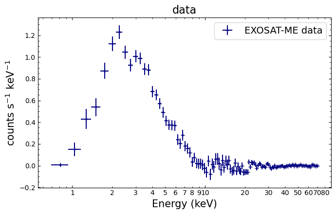
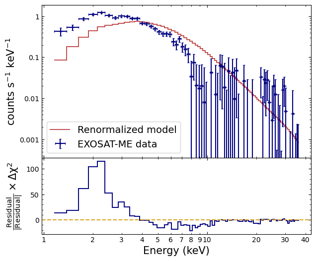
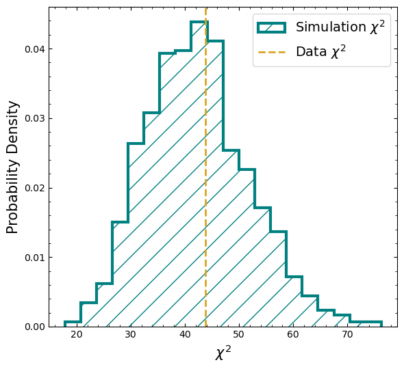
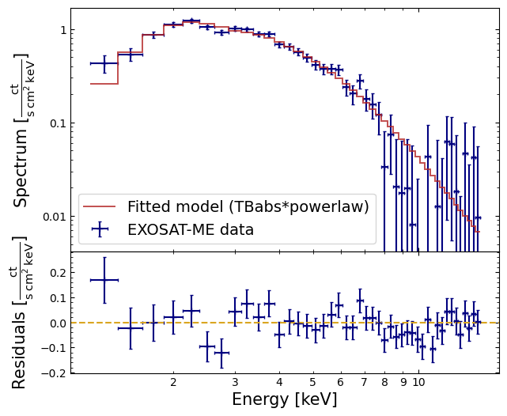
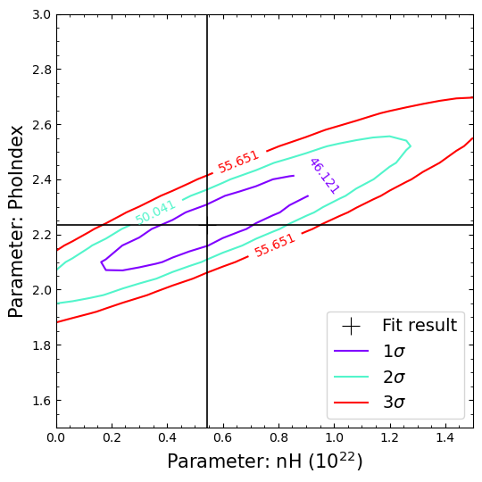
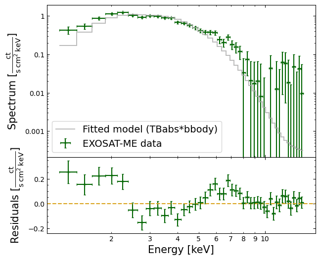
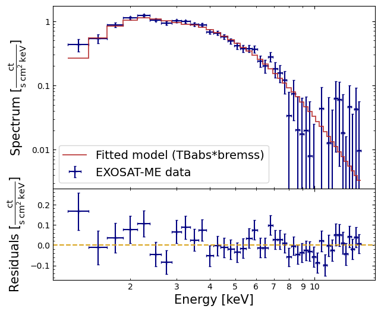
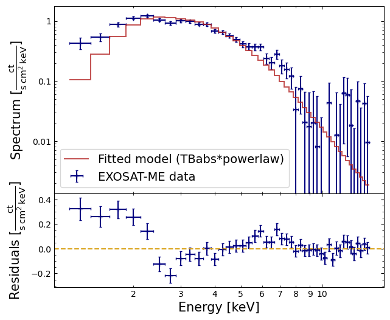
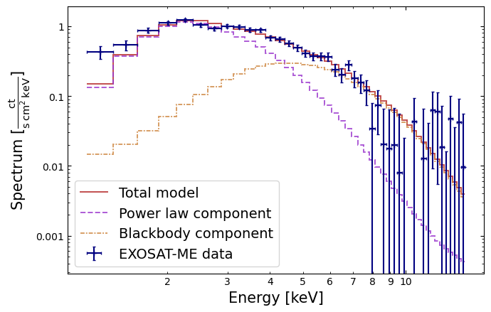

PyXspec basics – fitting models to data#
Learning Goals#
By the end of this tutorial, you will be able to:
Load X-ray a spectrum and response into PyXspec.
Define and fit models to X-ray spectra and evaluate their quality.
Calculate parameter errors and confidence contours.
Use PyXspec and matplotlib to visualize spectra and model fits.
Introduction#
This example uses some very old spectral data. It’s much simpler than more modern observations and so can be used to better illustrate the basics of XSPEC analysis.
The data in question is a 20 ks EXOSAT ‘Medium-Energy’ (ME) observation of the 6-second period X-ray pulsar 1E1048.1-5937 by EXOSAT, taken in June 1985.
In this example, we’ll conduct a general investigation of the spectrum from the Medium Energy instrument, i.e. follow the same sort of steps as the original investigators (Seward F. D., Charles P. A., Smale A. P. 1986).
The ME spectrum and corresponding response matrix were obtained from the HEASARC and are available either as part of a large collection of example data or directly from the URLs defined in the Global Setup: Constants section.
Inputs#
EXOSAT-ME spectrum file for 1E1048.1-5937 - s54405.pha
Corresponding EXOSAT-ME response file - s54405.rsp
Outputs#
Various diagnostic plots showing data, models, and residuals
Best-fit model parameters with uncertainties
Flux measurements and confidence ranges
Upper limit on iron emission line equivalent width
Runtime#
As of 28th May 2026, this notebook takes ~1-minute to run to completion on Fornax using the ‘small’ server with 8GB RAM/2 cores.
Imports#
import contextlib
import os
from time import sleep
from typing import Optional, Tuple
from urllib.request import urlretrieve
import numpy as np
import xspec as xs
from astropy.units import Quantity
from matplotlib import pyplot as plt
from matplotlib.ticker import FuncFormatter
from scipy.stats import chi2
Global Setup#
Functions#
Constants#
Configuration#
1. Loading a spectrum into PyXspec#
The spectral files we need for this demonstration were downloaded in the Global Setup: Configuration section.
We can read our spectrum file into a PyXspec Spectrum object, assigning it
to the exo_me_specvariable. Most PyXspec operations don’t involve
direct interaction with individual spectrum objects, but we will use it to ignore
some channels later in this tutorial.
The spectrum file we are using for this demonstration has not been downloaded to the same directory as the notebook, so we will briefly change our working directory as we load it.
Of course, we could pass the full spectrum path rather than changing directories, but the ‘RESPFILE’ entry in the spectrum’s header is a path relative to the location of the spectrum file.
As such, if we didn’t change directories, PyXspec would have been unable to find and
automatically load the response file (though we could instead pass a response
file path to the optional respfile argument of the Spectrum constructor).
with contextlib.chdir(ROOT_DATA_DIR):
exo_me_spec = xs.Spectrum("s54405.pha")
Creating a $HOME/.xspec directory for you
***Warning: Unrecognized grouping for channel(s). It/they will be reset to 1.
HOWEVER NOTE: Resets only occurred for channels of bad quality
Warning: RMF CHANTYPE keyword (UNKNOWN) is not consistent with that in spectrum (PHA)
1 spectrum in use
Spectral Data File: s54405.pha Spectrum 1
Net count rate (cts/s) for Spectrum:1 3.783e+00 +/- 1.367e-01
Assigned to Data Group 1 and Plot Group 1
Noticed Channels: 1-125
Telescope: EXOSAT Instrument: ME Channel Type: PHA
Exposure Time: 2.358e+04 sec
Using fit statistic: chi
Using Response (RMF) File s54405.rsp for Source 1
***Warning: POISSERR keyword is missing or of wrong format, assuming FALSE.
2. Visualizing the data#
One of the first things most users will want to do at this stage - even before fitting a model - is to look at their data (something we strongly encourage as a first step of any analysis).
XSPEC can plot a wide variety of different information, all related in some way to the underlying spectral data, fitted model(s), fit statistics, and the instrument used to collect the data.
Even though we’re using the Python interface to XSPEC and will be creating visualizations using Matplotlib, we can still take advantage of XSPEC’s backend plotting functionality by retrieving the data necessary to create a particular figure from PyXspec.
The exact visualization information that can be retrieved from PyXspec will depend on what you’re plotting, but here follow some examples of what can be fetched:
X and Y data points.
X and Y uncertainties.
Axis labels.
Plot title.
What plots can XSPEC generate?#
To list the types of plots that PyXspec can generate, we can run:
xs.Plot("?")
plot data/models/fits etc
Syntax: plot commands:
background chain chisq contour counts
data delchi dem edata eedata
eemodel eeufspec efficiency emodel eqw
eufspec fitstat foldmodel goodness icounts
insensitivity integprob lcounts ldata ledata
leedata margin model polangle polfrac
ratio residuals sensitivity sum ufspec
Multi-panel plots are created by entering multiple options e.g. data fitstat
Setting XSPEC’s plot device#
Before we actually plot something, we need to set the ‘plot device’ that XSPEC’s graphic library outputs to. When running XSPEC ‘traditionally’ (i.e. through the command line), then your choice of plot device will control whether a figure is written to a file or displayed in a window (and what technology/file format is utilized).
In this demonstration we don’t really want either of those things to happen, as we’re going to use the Python module matplotlib to do our own plotting. As such, we set the plot device to “/null”, which means that XSPEC won’t output figures at all:
xs.Plot.device = "/null"
Danger
Skipping this step could result in many files being written to your current directory, or the wholesale failure of all plotting in your notebook.
Plotting a spectrum#
The data plot option produces the most important of all XSPEC visualizations – a spectrum!
By default, spectra will be plotted as a function of instrument channel, which is the most fundamental indication of an X-ray event’s energy (said event hopefully corresponding to a photon, as opposed to a particle, hitting the detector).
On the other hand, if an instrument response has been loaded along with the spectral data (we made sure of that Section 1), then we can plot the spectrum as a function of energy (considerably more useful).
Note, however, that this won’t happen automatically just because a response is available; we have to specify the units of the energy axis explicitly:
xs.Plot.xAxis = "keV"
As we’ve already mentioned, we’re going to use the Python module matplotlib to construct our figures and visualizations. Compared to using XSPEC’s intrinsic plotting functionality, this will give us a great deal of flexibility and much finer control over the final figure.
Our first task is to use PyXspec to produce the rate, energy, and uncertainty information that make up a spectrum visualization, then to retrieve the data to pass to matplotlib.
Here we call the Plot method, passing “data” to specify which type of plot XSPEC
should produce (in this case a spectrum). Note that preparing and retrieving the
data necessary to visualize a PyXspec plot with Matplotlib are two distinct steps:
Running
Plot("data")will recalcuate plot quantities based on the current data, noticed channels, model fit (if any), etc.Calling
Plot.x()orPlot.y()will fetch the most current calculated quantities.
You will also notice that PyXspec very handily provides the axis labels and title that it would use if it were making the plot itself, we store those too:
xs.Plot("data")
spec_plot_data = {
"energy": np.array(xs.Plot.x()),
"energy_delta": np.array(xs.Plot.xErr()),
"rate": np.array(xs.Plot.y()),
"rate_err": np.array(xs.Plot.yErr()),
"x_label": xs.Plot.labels()[0],
"y_label": xs.Plot.labels()[1],
"title": xs.Plot.labels()[2],
}
Tip
If you’re working in a Jupyter notebook, and are likely to be making multiple versions of XSPEC plots, we recommend storing plot data in a dictionary, as we have demonstrated above.
This helps reduce the risk of accidentally re-using variable names and overwriting their existing values, or using plot data from a previous figure. As Jupyter notebooks can be run out of order, or have cells re-executed, this is an important consideration.
All that information can now be used to construct a figure showing the spectrum, prior to any fitting or energy limits, whilst making some small customizations to improve the appearance and clarity of the plot.
In this particular case, this includes:
Logging the energy axis;
plt.xscale("log")Configuring axis ticks to point inwards and be present on the top and right of the figure;
plt.tick_params(which="both", direction="in", top=True, right=True)Removing labels from minor ticks on the energy axis if the values are below 1 keV, to avoid colliding labels;
ax.xaxis.set_minor_formatter(FuncFormatter(lambda inp, _: "{:g}".format(inp) if inp >= 1 else ""))

3. Defining and fitting models#
We are now ready to fit the data with a model.
Models in XSPEC are specified using the model command, followed by an algebraic
expression of a combination of component models.
There are two basic kinds of model components – additive and multiplicative:
Additive components – Represent X-Ray sources of different kinds (e.g., a bremsstrahlung continuum) and, after being convolved with the instrument response, prescribe the number of counts per energy bin.
Multiplicative components – Represent phenomena that modify the observed X-Radiation (e.g. reddening or an absorption edge). They apply an energy-dependent multiplicative factor to the source radiation before the result is convolved with the instrumental response.
More generally, XSPEC allows three types of modifying components:
The multiplicative type mentioned above.
Convolutions, which apply a convolution operator to an input model calculated from another model (e.g. cgflux, which we use in Section 5).
Mixing models, which perform transformations on the available spectra (e.g. modeling cross-talk between spatial regions of a detector/source).
Since there must be a source, there must be at least one additive component model, but there is no restriction on the number of modifying components.
Setting up a model object#
Given the fairly low quality of our data, as shown by the plot above, we’ll
choose an absorbed power law. To set it up, we define an instance of the PyXspec
Model class and assign it to a variable - abs_pl_mod:
abs_pl_mod = xs.Model("tbabs(powerlaw)")
========================================================================
Model TBabs<1>*powerlaw<2> Source No.: 1 Active/On
Model Model Component Parameter Unit Value
par comp
1 1 TBabs nH 10^22 1.00000 +/- 0.0
2 2 powerlaw PhoIndex 1.00000 +/- 0.0
3 2 powerlaw norm 1.00000 +/- 0.0
________________________________________________________________________
tbvabs Version 2.3
Cosmic absorption with grains and H2, modified from
Wilms, Allen, & McCray, 2000, ApJ 542, 914-924
Questions: Joern Wilms
joern.wilms@sternwarte.uni-erlangen.de
joern.wilms@fau.de
http://pulsar.sternwarte.uni-erlangen.de/wilms/research/tbabs/
PLEASE NOTICE:
To get the model described by the above paper
you will also have to set the abundances:
abund wilm
Note that this routine ignores the current cross section setting
as it always HAS to use the Verner cross sections as a baseline.
Fit statistic : Chi-Squared 4.867896e+08 using 125 bins.
Test statistic : Chi-Squared 4.867896e+08 using 125 bins.
Null hypothesis probability of 0.000000e+00 with 122 degrees of freedom
Current data and model not fit yet.
Ignoring bad channels#
We are not quite ready to fit the data (and obtain a better \(\chi^2\)), because some of the 125 PHA bins should not be included in the fitting:
Some are below the lower discriminator of the instrument and therefore do not contain valid data.
Some have imperfect background subtraction at the margins of the pass band.
Some may not contain enough counts for \(\chi^2\) to be strictly meaningful.
To find out which channels to discard (ignore in XSPEC terminology), consult mission-specific documentation that will include information about discriminator settings, background subtraction problems, and other issues.
For the mature missions in the HEASARC archives, this information may have already been
encoded in the headers of the spectral files as a list of bad channels. To remove the
bad channels from the spectrum that we
previously read into exo_me_spec, we can use:
xs.AllData.ignore("bad")
ignore: 40 channels ignored from source number 1
Fit statistic : Chi-Squared 4.867277e+08 using 85 bins.
Test statistic : Chi-Squared 4.867277e+08 using 85 bins.
Null hypothesis probability of 0.000000e+00 with 82 degrees of freedom
Current data and model not fit yet.
Note
PyXspec doesn’t allow us to ignore “bad” channels for individual spectra, only for
all loaded spectra. AllData is a special data manager object which allows us
to perform operations on all current spectra.
Renormalizing the model to our data#
The current statistic is \(\chi^2\), and is huge for the initial, default, model parameter values – mostly because the power law normalization is two orders of magnitude too large. This particular problem is easily fixed using the renorm method:
xs.Fit.renorm()
Fit statistic : Chi-Squared 796.59 using 85 bins.
Test statistic : Chi-Squared 796.59 using 85 bins.
Null hypothesis probability of 1.46e-117 with 82 degrees of freedom
Current data and model not fit yet.
Visualizing the spectrum and renormalized model#
To show off our renormalized, but not yet fit, model, we’ll use PyXspec and matplotlib together to produce a two-panel figure. The top panel will show the spectral data and the current state of the model, and the bottom panel will show \(\Delta\chi^2\) values given the sign of the corresponding residual value.
Just like in Section 2, we can use the PyXspec Plot manager
object to calculate the information necessary to plot our spectrum, model, and signed
\(\Delta\chi^2\).
Passing two choices to the Plot object generates a plot with vertically stacked
‘plot windows’ (up to a maximum of six panels). The plot data
calculated for each plot option can be accessed by passing an index to the
plotWindow=... argument of Plot’s various methods.
Tip
Remember that XSPEC (and thus PyXspec) uses ‘one-based indexing’ (as opposed to
Python’s zero-based indexing), so to retrieve the data relevant to the bottom panel, we
need to pass plotWindow=2, and plotWindow=1 for the top panel.
We read out the spectral rates and errors, energy bin centers and half-widths, the current rates of the model at each energy bin center, and the signed \(\Delta\chi^2\) values calculated for the bottom panel – storing them in a dictionary. Additionally, the axis labels that XSPEC would have used are stored in the same dictionary.
In this instance we’re going to imitate the appearance of an XSPEC fitted spectrum plot, so rather than plotting the model as a smooth line, we’ll display it as a staircase. This being a visual reminder that the model is only evaluated at the centers of the energy bins.
To support the staircased model line, we calculate the upper and lower edges of each energy bin by subtracting the energy bin half-widths from the energy bin centers and appending a final bin edge representing the last energy bin center plus its half-width:
xs.Plot("data chi")
rn_mod_plot_data = {
"energy": np.array(xs.Plot.x(plotWindow=1)),
"energy_delta": np.array(xs.Plot.xErr(plotWindow=1)),
"rate": np.array(xs.Plot.y(plotWindow=1)),
"rate_err": np.array(xs.Plot.yErr(plotWindow=1)),
"model": np.array(xs.Plot.model(plotWindow=1)),
"signed_chisq": np.array(xs.Plot.y(plotWindow=2)),
"x_label": xs.Plot.labels(plotWindow=1)[0],
"y_label": xs.Plot.labels(plotWindow=1)[1],
"chisq_label": xs.Plot.labels(plotWindow=2)[1],
}
rn_mod_plot_data["energy_step"] = np.append(
rn_mod_plot_data["energy"] - rn_mod_plot_data["energy_delta"],
rn_mod_plot_data["energy"][-1] + rn_mod_plot_data["energy_delta"][-1],
)
***Warning: Fit is not current.
Attention
We get a warning that the fit is not current because no fit has been performed yet (renormalizing doesn’t count, the reason for which will become obvious when you see the figure).
As a brief aside, we can examine the XSPEC-generated label for the y-axis of the upcoming figure’s lower panel, as we won’t actually be using it in our visualization.
We’re discarding the default label for practical purposes, as it is too long for the small amount of space we give to the lower panel.
However, as you can see, the meanings of the original and our replacement are equivalent. You will also notice that XSPEC produces LaTeX-formatted labels suitable for use with matplotlib:
rn_mod_plot_data["chisq_label"]
'sign(data-model) $\\times$ $\\Delta$ $\\chi$$^{2}$'
Finally, we can make our visualization:

Ignoring channels based on energy#
Forty channels were rejected in a previous section because they were flagged as bad – but do we need to ignore any more?
The renormalized model figure shows the result of plotting the data and the model (in the upper window) and the contributions to \(\chi^2\) (in the lower window).
We see that above about 15 keV the signal-to-noise becomes small. We also see, when comparing with our initial spectrum figure, which bad channels were ignored.
Although visual inspection is not the most rigorous method for deciding which channels to ignore, it’s good enough for now and will at least prevent us from getting grossly misleading fit results. To ignore energies above 15 keV:
exo_me_spec.ignore("15.0-**")
78 channels (48-125) ignored in spectrum # 1
Fit statistic : Chi-Squared 718.42 using 45 bins.
Test statistic : Chi-Squared 718.42 using 45 bins.
Null hypothesis probability of 5.53e-124 with 42 degrees of freedom
Current data and model not fit yet.
Caution
Note that ignore (and notice) interpret integers as channel numbers and real
numbers as energies - it can be confusing when you think you’ve ignored everything
above 8 keV but instead find you only have 8 channels.
Also, the double star (**) is a special indicator which just means the
extreme value in the spectrum - in this case the upper extreme, but if we instead
ran ignore("**-15.0") we’d ignore everything up to 15 keV.
Preparing to fit the model#
We are now ready to fit the data. Fitting is initiated by the command xs.Fit.perform().
As the fit proceeds, the screen displays the status of the fit for each iteration until either the fit converges to the minimum \(\chi^2\), or the maximum number of iterations is exceeded.
The current maximum number of iterations can be found like this:
print(xs.Fit.nIterations)
10
We can also set a new maximum number of iterations using the same Fit attribute:
xs.Fit.nIterations = 50
Performing the model fit#
xs.Fit.perform()
Parameters
Chi-Squared |beta|/N Lvl 1:nH 2:PhoIndex 3:norm
451.747 150.716 -3 0.0934254 1.60966 0.00387228
413.31 63193.6 -3 0.272618 2.30612 0.00909560
54.0828 28059.8 -4 0.521485 2.14066 0.0121325
43.8345 4672.39 -5 0.556743 2.23842 0.0130769
43.8215 131.89 -6 0.543800 2.23583 0.0130241
43.8214 0.582959 -7 0.542814 2.23549 0.0130166
========================================
Variances and Principal Axes
1 2 3
4.7777E-08| -0.0025 -0.0151 0.9999
2.3010E-03| 0.3979 -0.9173 -0.0128
8.8416E-02| 0.9174 0.3978 0.0083
----------------------------------------
====================================
Covariance Matrix
1 2 3
7.478e-02 3.143e-02 6.623e-04
3.143e-02 1.593e-02 3.194e-04
6.623e-04 3.194e-04 6.532e-06
------------------------------------
========================================================================
Model TBabs<1>*powerlaw<2> Source No.: 1 Active/On
Model Model Component Parameter Unit Value
par comp
1 1 TBabs nH 10^22 0.542814 +/- 0.273463
2 2 powerlaw PhoIndex 2.23549 +/- 0.126210
3 2 powerlaw norm 1.30166E-02 +/- 2.55587E-03
________________________________________________________________________
Fit statistic : Chi-Squared 43.82 using 45 bins.
Test statistic : Chi-Squared 43.82 using 45 bins.
Null hypothesis probability of 3.94e-01 with 42 degrees of freedom
451.747 150.716 -3 0.0934254 1.60966 0.00387228
413.31 63193.6 -3 0.272618 2.30612 0.00909560
54.0828 28059.8 -4 0.521485 2.14066 0.0121325
43.8345 4672.39 -5 0.556743 2.23842 0.0130769
43.8215 131.89 -6 0.543800 2.23583 0.0130241
43.8214 0.582959 -7 0.542814 2.23549 0.0130166
========================================
Variances and Principal Axes
1 2 3
4.7777E-08| -0.0025 -0.0151 0.9999
2.3010E-03| 0.3979 -0.9173 -0.0128
8.8416E-02| 0.9174 0.3978 0.0083
----------------------------------------
====================================
Covariance Matrix
1 2 3
7.478e-02 3.143e-02 6.623e-04
3.143e-02 1.593e-02 3.194e-04
6.623e-04 3.194e-04 6.532e-06
------------------------------------
========================================================================
Model TBabs<1>*powerlaw<2> Source No.: 1 Active/On
Model Model Component Parameter Unit Value
par comp
1 1 TBabs nH 10^22 0.542814 +/- 0.273463
2 2 powerlaw PhoIndex 2.23549 +/- 0.126210
3 2 powerlaw norm 1.30166E-02 +/- 2.55587E-03
________________________________________________________________________
Fit statistic : Chi-Squared 43.82 using 45 bins.
Test statistic : Chi-Squared 43.82 using 45 bins.
Null hypothesis probability of 3.94e-01 with 42 degrees of freedom
Interpreting the output of an XSPEC fit#
There is a fair amount of information here, so we will unpack it a bit at a time.
State of the fit at each iteration [first section]#
XSPEC writes out one line after each fit iteration, containing the following:
Two obvious columns:
Chi-Squared
Parameters
As well as two less obvious columns related to fit convergence:
|beta|/N – At each step in the fit a numerical derivative of the statistic with respect to the parameters is calculated. We call the vector of these derivatives ‘beta’.
Lvl – A measure of the Levenberg–Marquardt algorithm’s (the default XSPEC fitting method) ‘damping parameter’ indicating how the fit is converging (it should generally decrease).
At the best-fit the normalization of beta should be zero, so XSPEC displays |beta| divided by the number of parameters (N) as a check of that.
The actual default convergence criterion is when the fit statistic does not change significantly between iterations, so bear in mind that it is possible for the fit to end while |beta| is still significantly different from zero.
Note
For the first iteration only the powerlaw normalization is varied.
While not strictly necessary this simple model, for more complicated models only varying the norms on the first iteration helps the fit proper get started in a reasonable region of parameter space.
Fitting statistics [second section]#
Once the fit has finished its iterations, PyXspec writes out the “Variances and Principal Axes” and “Covariance Matrix” tables. These are both based on the second derivatives of the fit statistic with respect to the parameters. Generally, the larger these second derivatives, the better determined the parameter (think of the case of a parabola in 1-D).
The “Covariance Matrix” table is the inverse of the matrix of second derivatives.
The “Variances and Principal Axes” section is based on an eigenvector decomposition of the second derivative matrix and indicates which parameters are correlated. We can see that in this case that the first eigenvector depends almost entirely on the powerlaw normalization, while the other two are combinations of the nH and powerlaw PhoIndex. This tells us that the normalization is independent, but that the other two parameters are correlated.
Best-fit model parameters and error estimates [third section]#
After the “Covariance Matrix” section, the next table shows the best-fit model parameters and their error estimates. The latter are just the square roots of the covariance matrix’s diagonal elements (i.e. the variance elements) – as such they implicitly assume that the parameter space is multidimensional Gaussian with all parameters independent.
We already know that in this case the parameters are not independent, so these error estimates should only be considered guidelines to help us determine the true errors later.
Final statistic values [fourth section]#
The fourth and final section displays the statistic values at the end of the fit.
PyXspec defines a fit statistic, used to determine the best-fit parameters and errors, and test statistic, used to decide whether this model and parameters provide a good fit to the data.
By default, both statistics are \(\chi^2\) – when the test statistic is \(\chi^2\), we can also calculate the null hypothesis probability (as you can see in the fit output).
The null hypothesis probability is the likelihood of getting a value of \(\chi^2\) as large or larger than observed if the model is correct, and if this probability is small, then the model is not a good fit.
Examining goodness of fit without a null hypothesis probability#
The null hypothesis probability can be calculated analytically for the \(\chi^2\) statistic and, if you haven’t selected a different test statistic, XSPEC will do so during model fits, as we saw in the last section.
Unfortunately, there is no way to analytically calculate the null hypothesis probability for some of the other test statistics that XSPEC offers, so we need another way to determine the meaning of the statistic value.
PyXspec has a built-in function that will perform simulations of the data based on the current model and parameters, then compare the statistic values of the simulation to that calculated for the real data. If the observed statistic is larger than the values calculated for the simulated data, then the implication is that the real data do not come from the current model.
Before we run the Fit.goodness(...) function, we will make our first use of XSPEC’s
parallelization capabilities, intended to improve the performance of certain tasks by
utilizing multiple cores (many-core CPUs are now almost ubiquitous). This demonstration
notebook determined the number of cores available in the Global Setup: Configuration
section, and stored the number in the NUM_CORES constant.
Here we specifically set the goodness function to use all available cores:
xs.Xset.parallel.goodness = NUM_CORES
Now we can run the command, which will display a one-line message passing judgement on the current model’s goodness (or lack thereof); it also returns the percentage of simulations that had a smaller test statistic than the observed data. While we’re at it, we retrieve the distribution of simulation test statistics for later use:
cur_lt_stat_perc = xs.Fit.goodness(1000)
# This just splits off the XSPEC output from the other output we show below
print("--------------------------------------------------------------------", "\n")
cur_test_stat = xs.Fit.testStatistic
# The 'previousGoodnessSims' attribute returns a list of strings - they
# must be converted to floats before we make a histogram.
goodness_dist = np.array(xs.Fit.previousGoodnessSims).astype(float)
goodness_dist[:20]
58.80% of realizations are < best test statistic 43.82 (nosim) (fit)
--------------------------------------------------------------------
--------------------------------------------------------------------
array([17.8307483 , 19.62602409, 20.76426273, 21.30913168, 21.83650857,
22.01511059, 22.18381599, 23.12378947, 23.28502316, 23.48332704,
23.58972276, 23.59922549, 23.77314561, 24.32848021, 24.38381696,
24.69270837, 24.69909351, 24.79786295, 25.23509332, 25.45735167])
Warning
We retrieve the goodness-of-fit distribution in the same cell as the call to the
goodness() method to ensure that no other fit or goodness calculation has been
run in between this goodness call and the retrieval.
This might happen if, for instance, you are running the notebook out of order - as the goodness-of-fit distribution is stored in the global fit manager, rather than a unique model object, it could be overridden.
Approximately 60% of the simulations give a statistic value less than that observed, consistent with this being a good fit. We might now want to plot a histogram of the \(\chi^2\) values from the simulations, with the observed statistic value shown as a vertical line, for context.
It is entirely possible to retrieve the bin centers and probability density values from PyXspec and use them with matplotlib to reconstruct the histogram that XSPEC would make – just as we’ve been doing for other visualizations.
Taking that route for a histogram is a little awkward, however, so why don’t we instead directly use the goodness-of-fit value distribution to construct and plot a histogram.
We actually already retrieved the goodness-of-fit distribution, in the same cell we ran
the goodness() method, so creating a histogram is straightforward:

Examining fit residuals#
So the statistic implies the fit is good, but it is still always a good idea to look at the data and residuals to check for any systematic differences that may not be caught by the test.
We pull the relevant information out of PyXspec in a similar manner to our earlier plot of the renormalized, unfit, model earlier, though here we pass “data resid” rather than “data chi”:
xs.Plot("data resid")
fit_pl_plot_data = {
"energy": np.array(xs.Plot.x(plotWindow=1)),
"energy_delta": np.array(xs.Plot.xErr(plotWindow=1)),
"rate": np.array(xs.Plot.y(plotWindow=1)),
"rate_err": np.array(xs.Plot.yErr(plotWindow=1)),
"model": np.array(xs.Plot.model(plotWindow=1)),
"residual": np.array(xs.Plot.y(plotWindow=2)),
"residual_err": np.array(xs.Plot.yErr(plotWindow=2)),
}
fit_pl_plot_data["energy_step"] = np.append(
fit_pl_plot_data["energy"] - fit_pl_plot_data["energy_delta"],
fit_pl_plot_data["energy"][-1] + fit_pl_plot_data["energy_delta"][-1],
)
We can now visualize our data, fitted model, and residuals by calling a convenience function that was defined in the Global Setup: Functions section. Said function contains plotting code that is quite similar to what we wrote for the last spectrum figure, but seeing as we’ll be wanting to make a few of these plots, it is neater to put into a function:
plot_fit_residual_spec(
fit_pl_plot_data, inst_name="EXOSAT-ME", mod_expr=abs_pl_mod.expression
)

4. Error analysis#
Now that we think we have an acceptable model, we need to determine how well the parameters are constrained.
You may recall that the output at the end of XSPEC’s fitting process (see this summary of its contents) shows the best-fitting parameter values, and approximations to their errors. Those errors should be regarded only as indications of the parameter uncertainties and should absolutely not be quoted in publications.
XSPEC’s error() method#
The true errors, i.e. the confidence ranges, are obtained using the Fit.error() method.
We want to run error() on all three parameters of our model, which is an intrinsically
parallel operation, so we can once again use PyXspec’s support for multiple cores and
run the error estimations in parallel.
The numbers 1, 2, 3 refer to the IDs assigned to each parameter by XSPEC. You can check which ID goes with which parameter by passing the IDs to our model object:
print(abs_pl_mod(1).name, abs_pl_mod(2).name, abs_pl_mod(3).name)
nH PhoIndex norm
Now we run the error calculation:
xs.Xset.parallel.error = NUM_CORES
xs.Fit.error("1-3")
Parameter Confidence Range (2.706)
1 0.107662 1.01753 (-0.43511,0.474755)
2 2.03713 2.44776 (-0.198347,0.212282)
3 0.00953337 0.0181336 (-0.00348297,0.0051173)
Examining the output of the error() method we see that for the first parameter, the
column density of absorbing hydrogen atoms, the 90% confidence range is 0.110–1.018.
More usefully, we can dynamically retrieve error values calculated for specific parameters from the XSPEC model object:
# Can access the nH parameter instance by passing its ID to the model
print(abs_pl_mod(1).error, "\n")
# Or by accessing the nH attribute of the model's TBabs attribute
print(abs_pl_mod.TBabs.nH.error)
(0.10766234087236387, 1.017527160754112, 'FFFFFFFFF')
(0.10766234087236387, 1.017527160754112, 'FFFFFFFFF')
The first entry in the returned tuple is the lower confidence limit, the second is the
upper confidence limit, and the third is the nine-letter error string that
indicates whether the error calculation was successful (FFFFFFFFF means that we’re
all good; see the ‘error’ entry in the XSPEC tclout API reference
for full information).
Tip
When you pass only a set of parameters to error(), and no other arguments, you are
determining the 90% confidence interval - a \(\Delta\chi^{2}\) of 2.706.
It is of course possible to tell XSPEC to calculate a different confidence level. You
can pass a delta fit statistic calculated from a one degree of freedom \(\chi^2\)
distribution (see the next section for an easy way to do this in Python)
to the error() method. For the 68.3% (\(1\sigma\)) confidence levels of all three
parameters we would use error("1.0 1-3"), for 95.5% (\(2\sigma\)) - error("4.034 1-3"),
and for 99.7% (\(3\sigma\)) - error("9.0 1-3")
You might ask why these better error calculations are not performed automatically, as part of the standard fitting process – the answer to that question is that they entail further fitting. When the model is simple (as in our example), this requires little CPU time, but for complicated models the extra time can be quite considerable.
The error for each parameter is determined by allowing all other, unfrozen, model parameters to vary freely, and if model parameters are uncorrelated then this error is all we need to know.
Remember, though, that we have an indication from the fit process’s output covariance matrix that the hydrogen column density and photon index parameters are correlated!
Running steppar to explore parameter correlations#
To further investigate the possible correlation between hydrogen column density and
power law photon index, we can use the PyXspec Fit manager object’s steppar(...)
method to run a grid over these two parameters, calculating a joint confidence region.
When we call steppar, we’re going to make it construct a two-dimensional
parameter grid for nH and PhoIndex:
The nH dimension will consist of 25 evenly spaced points between 0.0 and 1.5.
The PhoIndex dimension will consist of 25 evenly spaced points between 1.5 and 3.0.
This is another operation that can benefit greatly from parallelization, so we make sure to configure PyXspec to use all available cores:
xs.Xset.parallel.steppar = NUM_CORES
xs.Fit.steppar("1 0.0 1.5 25 2 1.5 3.0 25")
# See the warning below
sleep(5)
Warning
We are aware of an unexpected behaviour in PyXspec v2.1.5 where steppar() outputs can
spill over into the next cell’s output, particularly when using Jupyter’s ‘run all’
option. Pausing Python’s execution for a few seconds after the steppar call is
a crude workaround.
Examining steppar output as a contour plot#
The result of our steppar() run can be understood more clearly by plotting
confidence contours.
XSPEC’s (and thus PyXspec’s) default \(\Delta\chi^2\) contour levels are:
2.30 [\(1\sigma\); 68.3%]
4.61 [90%]
9.21 [99%]
The stated confidence levels are valid for a two degree of freedom (i.e. parameter) contour plot.
The contour plotting command we’re about to use expects contour levels to be input as \(\Delta\chi^2\) values, so if we, for instance, want to specify which contours are calculated as confidence levels in fraction/percentage form, we need to perform a quick calculation.
To infer a confidence level (or inversely a p-value) from a \(\chi^2\)-distribution, we
have to inverse the cumulative distribution function (CDF). To make this a
little simpler, we can just use SciPy’s implementation of the \(\chi^2\)-distribution,
and call the ppf(...) method (standing for “percent point function”).
As we want to plot these contours and label them with their confidence levels, we store our chosen percentiles in a dictionary, with keys ready to be used in the legend of the figure we’re about to construct.
The df=2 argument specifies that we want to calculate the \(\Delta\chi^2\) values
for a two degree of freedom distribution – this is because we’re calculating a
confidence region for both parameters we investigated with steppar():
cont_conf_perc = {r"$1\sigma$": 0.6826, r"$2\sigma$": 0.9554, r"$3\sigma$": 0.9973}
cont_chisq = chi2.ppf(list(cont_conf_perc.values()), df=2).round(2)
cont_chisq
array([ 2.3 , 6.22, 11.83])
Note
If you wish to calculate \(\Delta\chi^{2}\) values from percentage confidence levels
to pass to an XSPEC error() call, remember to set df=1. When you’re using
error() to calculate parameter uncertainties, you are not calculating a joint
confidence region, no matter how many parameters you told error() to explore.
Now we use PyXspec’s Plot manager to prepare all the information required to
create a contour plot using matplotlib. By default XSPEC will include a
probability density image as a backdrop to its contour plots, but as we don’t
require that for our purposes, we turn it off.
The command we pass to Plot specifies the number of contours, and their levels;
as we don’t manually specify a minimum fit statistic (the first argument), the
command begins with “,,”.
xs.Plot.addCommand("image off")
xs.Plot(f"contour ,,{len(cont_chisq)},{','.join(cont_chisq.astype(str))}")
xs.Plot.delCommand(1)
steppar_plot_data = {
"nh": xs.Plot.x(),
"powerlaw_ind": xs.Plot.y(),
"contour_height": xs.Plot.z(),
"contour_level": xs.Plot.contourLevels(),
"x_label": xs.Plot.labels()[0],
"y_label": xs.Plot.labels()[1],
}
# Store the current fit statistic value
cur_fit_stat = xs.Fit.statistic
Now that PyXspec has done all the hard work for us, we can use the information we just retrieved to make a nice contour plot:

5. Flux calculation#
What else can we do with a model fit?
One thing is to derive the flux of the model – the data by themselves only give the instrument-dependent count rate. The model, on the other hand, is an estimate of the true spectrum emitted by the astrophysical object. In PyXspec, the model is defined in physical units independent of the instrument.
Calling the calcFlux() method#
The calcFlux() method of the model manager AllModels (AllModels is the way of
operating on all Model objects in the same way as AllData on all Spectrum
objects) integrates the current model over an energy range specified by the
user (2.0–10.0 keV in this case):
xs.AllModels.calcFlux("2.0 10.0")
Model Flux 0.0035392 photons (2.2324e-11 ergs/cm^2/s) range (2.0000 - 10.000 keV)
From that calculation we can see that the energy flux is \({\sim}2.2 \times 10^{-11} \: \rm{erg}\:\rm{cm}^{-2}\:s^{-1}\).
When calculating the flux in this manner (i.e. not using the method discussed
in the next subsection),
we can retrieve the current value from the flux attribute of the spectrum object:
exo_me_spec.flux[0]
2.232356097423783e-11
Note that calcFlux() will integrate only within the energy range of the current
response matrix. If the model flux outside this energy range is desired - in effect, an
extrapolation beyond the data - then the setEnergies() method should be used.
This method defines a set of energies on which the models will be calculated. The resulting models are then remapped onto the response energies for convolution with the response matrix.
For example, if we want to know the flux of our model in the ROSAT PSPC band of 0.2–2.0 keV, we enter:
xs.AllModels.setEnergies("extend", "low,0.2,100")
xs.AllModels.calcFlux("0.2 2.0")
Models will use response energies extended to:
Low: 0.2 in 100 log bins
Fit statistic : Chi-Squared 43.82 using 45 bins.
Test statistic : Chi-Squared 43.82 using 45 bins.
Null hypothesis probability of 3.94e-01 with 42 degrees of freedom
Current data and model not fit yet.
Model Flux 0.0043107 photons (8.8204e-12 ergs/cm^2/s) range (0.20000 - 2.0000 keV)
The energy flux, at \({\sim}8.8\times10^{-12} \: \rm{erg}\:\rm{cm}^{-2}\:s^{-1}\) is lower in this band, but the photon flux is higher.
Model energies can be reset to the response energies using xs.AllModels.setEnergies("reset").
Using the cflux model component to calculate flux value and uncertainty#
Calculating the flux is not usually enough, we want its uncertainty as well. The best way to do this is to make use of the cflux model. Suppose further that what we really want is the unabsorbed flux (i.e. what we think the object is emitting prior to the wider Universe getting in the way) then we redefine the model by:
abs_pl_par_vals = (
abs_pl_mod(1).values[0],
abs_pl_mod(2).values[0],
abs_pl_mod(3).values[0],
)
abs_pl_cflux_mod = xs.Model(
"tbabs*cflux(powerlaw)",
setPars=(
abs_pl_par_vals[0],
0.2,
2.0,
-10.3,
abs_pl_par_vals[1],
abs_pl_par_vals[2],
),
)
========================================================================
Model TBabs<1>*cflux<2>*powerlaw<3> Source No.: 1 Active/On
Model Model Component Parameter Unit Value
par comp
1 1 TBabs nH 10^22 0.542778 +/- 0.0
2 2 cflux Emin keV 0.200000 frozen
3 2 cflux Emax keV 2.00000 frozen
4 2 cflux lg10Flux cgs -10.3000 +/- 0.0
5 3 powerlaw PhoIndex 2.23548 +/- 0.0
6 3 powerlaw norm 1.30164E-02 +/- 0.0
________________________________________________________________________
Fit statistic : Chi-Squared 51.47 using 45 bins.
Test statistic : Chi-Squared 51.47 using 45 bins.
Null hypothesis probability of 1.27e-01 with 41 degrees of freedom
Current data and model not fit yet.
The Emin and Emax parameters are set to the energy range over which we want the flux to be calculated. We also have to fix the normalization of the powerlaw because the normalization of the model will now be determined by the lg10Flux parameter.
abs_pl_cflux_mod.powerlaw.norm.frozen = True
Fit statistic : Chi-Squared 51.47 using 45 bins.
Test statistic : Chi-Squared 51.47 using 45 bins.
Null hypothesis probability of 1.50e-01 with 42 degrees of freedom
Current data and model not fit yet.
Now we run the model fit and calculate the uncertainty on parameter four (lg10Flux):
xs.Fit.perform()
xs.Fit.error("4")
Warning: renorm - no variable model to allow renormalization
Parameters
Chi-Squared |beta|/N Lvl 1:nH 4:lg10Flux 5:PhoIndex
43.8243 151.428 -3 0.534552 -10.2827 2.23148
43.8215 2.54227 -4 0.542443 -10.2795 2.23541
========================================
Variances and Principal Axes
1 4 5
3.3544E-05| 0.0637 -0.8010 0.5953
3.1291E-03| 0.5102 -0.4865 -0.7092
1.0002E-01| 0.8577 0.3489 0.3776
----------------------------------------
====================================
Covariance Matrix
1 2 3
7.440e-02 2.915e-02 3.126e-02
2.915e-02 1.294e-02 1.424e-02
3.126e-02 1.424e-02 1.585e-02
------------------------------------
========================================================================
Model TBabs<1>*cflux<2>*powerlaw<3> Source No.: 1 Active/On
Model Model Component Parameter Unit Value
par comp
1 1 TBabs nH 10^22 0.542443 +/- 0.272755
2 2 cflux Emin keV 0.200000 frozen
3 2 cflux Emax keV 2.00000 frozen
4 2 cflux lg10Flux cgs -10.2795 +/- 0.113748
5 3 powerlaw PhoIndex 2.23541 +/- 0.125881
6 3 powerlaw norm 1.30164E-02 frozen
________________________________________________________________________
Fit statistic : Chi-Squared 43.82 using 45 bins.
Test statistic : Chi-Squared 43.82 using 45 bins.
Null hypothesis probability of 3.94e-01 with 42 degrees of freedom
Parameter Confidence Range (2.706)
4 -10.4579 -10.0806 (-0.178538,0.198762)
This process tells us that the 90% confidence range (the default when
error("<par ID>") is called without further arguments) of the 0.2–2.0 keV unabsorbed
flux is \({\sim}3.5 — 8.3 \: \times 10^{-11} \: \rm{erg}\:\rm{cm}^{-2}\:s^{-1}\).
Usefully, we can also programmatically retrieve the flux value and just-calculated confidence interval. As cflux is just another component model, we can access its parameters in the same way we would any other:
cur_flux = Quantity(10 ** abs_pl_cflux_mod.cflux.lg10Flux.values[0], "erg cm^-2 s^-1")
cur_flux
cur_flux_conf_inter = 10 ** np.array(abs_pl_cflux_mod.cflux.lg10Flux.error[:2])
cur_flux_conf_inter = Quantity(cur_flux_conf_inter, "erg cm^-2 s^-1")
cur_flux_conf_inter
6. Testing alternative spectral models#
The absorbed power law fit, as we’ve remarked, is good, and the parameters are constrained. However, unless the purpose of our investigation is merely to measure a photon index, it’s a good idea to check whether alternative models can fit the data just as well.
We also should derive upper limits on components such as iron emission lines and additional continua, which, although not evident in the data nor required for a good fit, are nevertheless important to constrain – though we’ll get to that in Section 7.
Absorbed blackbody model#
First, let’s try an absorbed blackbody:
abs_bb_mod = xs.Model("tbabs*bb")
xs.Fit.perform()
========================================================================
Model TBabs<1>*bbody<2> Source No.: 1 Active/On
Model Model Component Parameter Unit Value
par comp
1 1 TBabs nH 10^22 1.00000 +/- 0.0
2 2 bbody kT keV 3.00000 +/- 0.0
3 2 bbody norm 1.00000 +/- 0.0
________________________________________________________________________
Fit statistic : Chi-Squared 3.375927e+09 using 45 bins.
Test statistic : Chi-Squared 3.375927e+09 using 45 bins.
Null hypothesis probability of 0.000000e+00 with 42 degrees of freedom
Current data and model not fit yet.
Parameters
Chi-Squared |beta|/N Lvl 1:nH 2:kT 3:norm
1534.86 63.2544 0 0.338183 3.01571 0.000673480
1523.38 111647 0 0.161649 2.96538 0.000613265
1492.13 170705 0 0.0709727 2.87593 0.000569742
1445.31 204930 0 0.0268499 2.76631 0.000534590
1388.29 227495 0 0.00599150 2.64726 0.000503786
1324.83 244672 0 0.00114251 2.52385 0.000475565
1254.75 259313 0 2.68036e-05 2.39831 0.000449173
1178.12 272733 0 1.09316e-05 2.27155 0.000424348
1094.73 285233 0 3.78841e-06 2.14399 0.000401001
1004.43 296655 0 6.15032e-07 2.01591 0.000379132
907.174 306551 0 2.67839e-07 1.88760 0.000358788
803.296 314244 0 1.18574e-07 1.75950 0.000340062
693.902 318851 0 5.57470e-08 1.63237 0.000323098
581.452 319356 0 4.16219e-09 1.50754 0.000308105
470.506 314775 0 1.58837e-09 1.38738 0.000295357
368.152 304507 0 5.89385e-10 1.27564 0.000285161
282.873 288791 0 2.09421e-10 1.17746 0.000277735
220.712 269031 0 6.50669e-11 1.09775 0.000272993
181.275 247485 0 8.88206e-12 1.03846 0.000270428
158.686 226446 0 3.18562e-12 0.997325 0.000269295
146.336 207545 0 7.66588e-13 0.969936 0.000268951
139.675 191524 0 2.25499e-13 0.952241 0.000268959
135.933 178966 0 1.01576e-13 0.940689 0.000269090
133.569 169442 0 4.54874e-14 0.933018 0.000269407
132.099 159951 0 2.04889e-14 0.926844 0.000269436
130.474 155792 0 9.03629e-15 0.921170 0.000269954
129.487 144815 0 1.40881e-15 0.919024 0.000270668
127.913 133035 0 4.78915e-16 0.916484 0.000272258
126.278 108070 0 9.78465e-17 0.913262 0.000274380
125.939 74833.7 0 3.56453e-17 0.911866 0.000274746
***Warning: Zero alpha-matrix diagonal element for parameter 1
Parameter 1 is pegged at 3.56453e-17 due to zero or negative pivot element, likely
caused by the fit being insensitive to the parameter.
124.393 102930 0 3.56453e-17 0.902731 0.000276864
123.808 48243.1 -1 3.56453e-17 0.893755 0.000278515
123.775 4434.48 -2 3.56453e-17 0.891028 0.000278618
123.773 92.193 -3 3.56453e-17 0.890376 0.000278601
***Warning: Zero alpha-matrix diagonal element for parameter 1
Parameter 1 is pegged at 3.56453e-17 due to zero or negative pivot element, likely
caused by the fit being insensitive to the parameter.
123.773 3.42057 -3 3.56453e-17 0.890224 0.0002
78596
==============================
Variances and Principal Axes
2 3
2.2371E-11| -0.0000 1.0000
2.8685E-04| 1.0000 0.0000
------------------------------
========================
Covariance Matrix
1 2
2.869e-04 9.352e-09
9.352e-09 2.268e-11
------------------------
========================================================================
Model TBabs<1>*bbody<2> Source No.: 1 Active/On
Model Model Component Parameter Unit Value
par comp
1 1 TBabs nH 10^22 3.56453E-17 +/- -1.00000
2 2 bbody kT keV 0.890224 +/- 1.69367E-02
3 2 bbody norm 2.78596E-04 +/- 4.76190E-06
________________________________________________________________________
Fit statistic : Chi-Squared 123.77 using 45 bins.
Test statistic : Chi-Squared 123.77 using 45 bins.
Null hypothesis probability of 5.42e-10 with 42 degrees of freedom
78596
==============================
Variances and Principal Axes
2 3
2.2371E-11| -0.0000 1.0000
2.8685E-04| 1.0000 0.0000
------------------------------
========================
Covariance Matrix
1 2
2.869e-04 9.352e-09
9.352e-09 2.268e-11
------------------------
========================================================================
Model TBabs<1>*bbody<2> Source No.: 1 Active/On
Model Model Component Parameter Unit Value
par comp
1 1 TBabs nH 10^22 3.56453E-17 +/- -1.00000
2 2 bbody kT keV 0.890224 +/- 1.69367E-02
3 2 bbody norm 2.78596E-04 +/- 4.76190E-06
________________________________________________________________________
Fit statistic : Chi-Squared 123.77 using 45 bins.
Test statistic : Chi-Squared 123.77 using 45 bins.
Null hypothesis probability of 5.42e-10 with 42 degrees of freedom
Note that the fit process has displayed a warning about the first parameter and its estimated error is -1.
Unsurprisingly, this is a bad sign! It indicates that the fit is unable to constrain the parameter, and it should be considered indeterminate. We can usually interpret this as meaning that the model is not appropriate.
One thing to check in this case is that the model component has any contribution within the energy range being calculated.
The black body fit is obviously not a good one. Not only is \(\chi^2\) large, but the best-fitting N\(_{\rm H}\) is indeterminate.
When diagnosing a seemingly poor model fit, it is often useful to take a look at the residuals (like we already did for the absorbed power law model). To that end, we once again ask PyXspec to provide the necessary plotting data:
xs.Plot("data resid")
fit_bb_plot_data = {
"energy": np.array(xs.Plot.x(plotWindow=1)),
"energy_delta": np.array(xs.Plot.xErr(plotWindow=1)),
"rate": np.array(xs.Plot.y(plotWindow=1)),
"rate_err": np.array(xs.Plot.yErr(plotWindow=1)),
"model": np.array(xs.Plot.model(plotWindow=1)),
"residual": np.array(xs.Plot.y(plotWindow=2)),
"residual_err": np.array(xs.Plot.yErr(plotWindow=2)),
}
fit_bb_plot_data["energy_step"] = np.append(
fit_bb_plot_data["energy"] - fit_bb_plot_data["energy_delta"],
fit_bb_plot_data["energy"][-1] + fit_bb_plot_data["energy_delta"][-1],
)
Now we plot the data, and inspection of the residuals provides another confirmation of our belief that the absorbed blackbody model is not a good choice. The pronounced wave-like shape is indicative of a bad choice of overall continuum:
plot_fit_residual_spec(
fit_bb_plot_data,
inst_name="EXOSAT-ME",
mod_expr=abs_bb_mod.expression,
sp_color="darkgreen",
res_color="darkgreen",
mod_color="darkgrey",
)

Absorbed thermal bremsstrahlung model#
Let’s try thermal bremsstrahlung next, following the same procedure we did for the absorbed blackbody in the last subsection.
First, we define a model instance and run a fit:
abs_br_mod = xs.Model("tbabs*brems")
xs.Fit.perform()
========================================================================
Model TBabs<1>*bremss<2> Source No.: 1 Active/On
Model Model Component Parameter Unit Value
par comp
1 1 TBabs nH 10^22 1.00000 +/- 0.0
2 2 bremss kT keV 7.00000 +/- 0.0
3 2 bremss norm 1.00000 +/- 0.0
________________________________________________________________________
Fit statistic : Chi-Squared 4.545115e+07 using 45 bins.
Test statistic : Chi-Squared 4.545115e+07 using 45 bins.
Null hypothesis probability of 0.000000e+00 with 42 degrees of freedom
Current data and model not fit yet.
Parameters
Chi-Squared |beta|/N Lvl 1:nH 2:kT 3:norm
104.367 23.8112 -3 0.273915 6.17368 0.00725005
46.6859 16500.6 -4 0.0365477 5.60244 0.00785592
43.1958 5654.35 -5 0.0169395 5.64498 0.00792029
42.3436 3589.54 -6 0.000210932 5.64193 0.00792328
42.3299 3135.34 -7 9.76410e-05 5.64205 0.00792369
42.327 3123.8 -8 4.10602e-05 5.64202 0.00792372
========================================
Variances and Principal Axes
1 2 3
1.8452E-08| -0.0015 0.0006 1.0000
1.2724E-02| 0.9784 0.2069 0.0013
6.6797E-01| -0.2069 0.9784 -0.0009
----------------------------------------
====================================
Covariance Matrix
1 2 3
4.079e-02 -1.327e-01 1.365e-04
-1.327e-01 6.399e-01 -5.630e-04
1.365e-04 -5.630e-04 5.433e-07
------------------------------------
========================================================================
Model TBabs<1>*bremss<2> Source No.: 1 Active/On
Model Model Component Parameter Unit Value
par comp
1 1 TBabs nH 10^22 4.10602E-05 +/- 0.201955
2 2 bremss kT keV 5.64202 +/- 0.799941
3 2 bremss norm 7.92
372E-03 +/- 7.37090E-04
________________________________________________________________________
Fit statistic : Chi-Squared 42.33 using 45 bins.
Test statistic : Chi-Squared 42.33 using 45 bins.
Null hypothesis probability of 4.57e-01 with 42 degrees of freedom
372E-03 +/- 7.37090E-04
________________________________________________________________________
Fit statistic : Chi-Squared 42.33 using 45 bins.
Test statistic : Chi-Squared 42.33 using 45 bins.
Null hypothesis probability of 4.57e-01 with 42 degrees of freedom
Now we extract the data necessary to plot the fitted spectrum and residuals:
xs.Plot("data resid")
fit_br_plot_data = {
"energy": np.array(xs.Plot.x(plotWindow=1)),
"energy_delta": np.array(xs.Plot.xErr(plotWindow=1)),
"rate": np.array(xs.Plot.y(plotWindow=1)),
"rate_err": np.array(xs.Plot.yErr(plotWindow=1)),
"model": np.array(xs.Plot.model(plotWindow=1)),
"residual": np.array(xs.Plot.y(plotWindow=2)),
"residual_err": np.array(xs.Plot.yErr(plotWindow=2)),
}
fit_br_plot_data["energy_step"] = np.append(
fit_br_plot_data["energy"] - fit_br_plot_data["energy_delta"],
fit_br_plot_data["energy"][-1] + fit_br_plot_data["energy_delta"][-1],
)
Finally, we make a visualization:
plot_fit_residual_spec(
fit_br_plot_data, inst_name="EXOSAT-ME", mod_expr=abs_br_mod.expression
)

It is clear that the Bremsstrahlung model is a better fit than the blackbody – and is as good as the power law – although it shares the low absorption column.
Absorbed power law model [frozen nH]#
With two models that appear to be good fits to the spectrum (absorbed power law and absorbed Bremsstrahlung), it’s time to scrutinize their parameters in more detail.
From the EXOSAT database on HEASARC, we know that the target in question, 1E1048.1-5937, is almost on the plane of the Galaxy. In fact, the database also provides values for the Galactic N\(_{\rm H}\) based on 21-cm radio observations.
One estimate (though admittedly not the one you will get from the current version
of nhtool) puts it at \(4\times10^{22}\) cm\(^{-2}\), which is higher than the 90%
confidence upper limit from the power-law fit.
Perhaps, then, the power-law fit is not so good after all. What we can do is fix (freeze in XSPEC terminology) the value of N\(_{\rm H}\) at the Galactic value and refit the power law. Although we won’t get a good fit, the shape of the residuals might give us a clue to what is missing.
We follow a familiar procedure, though here we make sure to freeze the value of the Hydrogen column density at the estimate we’re using:
abs_pl_frz_nh_mod = xs.Model("tbabs*powerlaw")
abs_pl_frz_nh_mod.TBabs.nH = 4.0
abs_pl_frz_nh_mod.TBabs.nH.frozen = True
xs.Fit.perform()
========================================================================
Model TBabs<1>*powerlaw<2> Source No.: 1 Active/On
Model Model Component Parameter Unit Value
par comp
1 1 TBabs nH 10^22 1.00000 +/- 0.0
2 2 powerlaw PhoIndex 1.00000 +/- 0.0
3 2 powerlaw norm 1.00000 +/- 0.0
________________________________________________________________________
Fit statistic : Chi-Squared 4.859538e+08 using 45 bins.
Test statistic : Chi-Squared 4.859538e+08 using 45 bins.
Null hypothesis probability of 0.000000e+00 with 42 degrees of freedom
Current data and model not fit yet.
Fit statistic : Chi-Squared 3.207240e+08 using 45 bins.
Test statistic : Chi-Squared 3.207240e+08 using 45 bins.
Null hypothesis probability of 0.000000e+00 with 42 degrees of freedom
Current data and model not fit yet.
Fit statistic : Chi-Squared 3.207240e+08 using 45 bins.
Test statistic : Chi-Squared 3.207240e+08 using 45 bins.
Null hypothesis probability of 0.000000e+00 with 43 degrees of freedom
Current data and model not fit yet.
Parameters
Chi-Squared |beta|/N Lvl 2:PhoIndex 3:norm
1107.58 195.47 -1 1.29283
0.00381578
935.643 40104.6 -1 1.56254 0.00582512
766.041 31426.4 -1 1.80268 0.00873216
622.228 19892.6 -1 2.01612 0.0124867
507.734 12157.1 -1 2.20659 0.0170071
418.397 7544.3 -1 2.37673 0.0221916
416.213 4814.65 -2 3.05221 0.0440337
309.299 7466.95 -3 3.59154 0.0891606
134.291 3400.36 -4 3.57479 0.113292
134.227 66.1577 -5 3.57576 0.112938
134.227 0.0772422 -6 3.57595 0.112962
==============================
Variances and Principal Axes
2 3
3.6240E-06| -0.1311 0.9914
4.6299E-03| 0.9914 0.1311
------------------------------
========================
Covariance Matrix
1 2
4.550e-03 6.011e-04
6.011e-04 8.308e-05
------------------------
========================================================================
Model TBabs<1>*powerlaw<2> Source No.: 1 Active/On
Model Model Component Parameter Unit Value
par comp
1 1 TBabs nH 10^22 4.00000 frozen
2 2 powerlaw PhoIndex 3.57595 +/- 6.74570E-02
3 2 powerlaw norm 0.112962 +/- 9.11477E-03
________________________________________________________________________
Fit statistic : Chi-Squared 134.23 using 45 bins.
Test statistic : Chi-Squared 134.23 using 45 bins.
Null hypothesis probability of 2.58e-11 with 43 degrees of freedom
0.00381578
935.643 40104.6 -1 1.56254 0.00582512
766.041 31426.4 -1 1.80268 0.00873216
622.228 19892.6 -1 2.01612 0.0124867
507.734 12157.1 -1 2.20659 0.0170071
418.397 7544.3 -1 2.37673 0.0221916
416.213 4814.65 -2 3.05221 0.0440337
309.299 7466.95 -3 3.59154 0.0891606
134.291 3400.36 -4 3.57479 0.113292
134.227 66.1577 -5 3.57576 0.112938
134.227 0.0772422 -6 3.57595 0.112962
==============================
Variances and Principal Axes
2 3
3.6240E-06| -0.1311 0.9914
4.6299E-03| 0.9914 0.1311
------------------------------
========================
Covariance Matrix
1 2
4.550e-03 6.011e-04
6.011e-04 8.308e-05
------------------------
========================================================================
Model TBabs<1>*powerlaw<2> Source No.: 1 Active/On
Model Model Component Parameter Unit Value
par comp
1 1 TBabs nH 10^22 4.00000 frozen
2 2 powerlaw PhoIndex 3.57595 +/- 6.74570E-02
3 2 powerlaw norm 0.112962 +/- 9.11477E-03
________________________________________________________________________
Fit statistic : Chi-Squared 134.23 using 45 bins.
Test statistic : Chi-Squared 134.23 using 45 bins.
Null hypothesis probability of 2.58e-11 with 43 degrees of freedom
Then fetching the information necessary to plot a fitted spectrum and residuals:
xs.Plot("data resid")
fit_pl_frz_nh_plot_data = {
"energy": np.array(xs.Plot.x(plotWindow=1)),
"energy_delta": np.array(xs.Plot.xErr(plotWindow=1)),
"rate": np.array(xs.Plot.y(plotWindow=1)),
"rate_err": np.array(xs.Plot.yErr(plotWindow=1)),
"model": np.array(xs.Plot.model(plotWindow=1)),
"residual": np.array(xs.Plot.y(plotWindow=2)),
"residual_err": np.array(xs.Plot.yErr(plotWindow=2)),
}
fit_pl_frz_nh_plot_data["energy_step"] = np.append(
fit_pl_frz_nh_plot_data["energy"] - fit_pl_frz_nh_plot_data["energy_delta"],
fit_pl_frz_nh_plot_data["energy"][-1] + fit_pl_frz_nh_plot_data["energy_delta"][-1],
)
Finally, making a visualization:
plot_fit_residual_spec(
fit_pl_frz_nh_plot_data,
inst_name="EXOSAT-ME",
mod_expr=abs_pl_frz_nh_mod.expression,
)

In this version of the absorbed power-law fit, there appears to be an observational surplus of softer photons, perhaps indicating a second continuum component needs to be modeled.
Absorbed power law + blackbody model [frozen nH]#
To investigate this possibility, we can combine what we have with another additive model component; a bbody.
Note that we freeze the temperature parameter of the black body to 2 keV (the canonical temperature for nuclear burning on the surface of a neutron star in a low-mass X-ray binary) using an XSPEC trick that setting the delta for a parameter to zero switches its freeze/thaw status.
We also set the normalization of the component to a small number to start the fit off in a sensible place since we are looking for a small change to the model.
abs_pl_frz_nh_par_vals = (
abs_pl_frz_nh_mod(1).values[0],
abs_pl_frz_nh_mod(2).values[0],
abs_pl_frz_nh_mod(3).values[0],
)
abs_pl_bb_frz_nh_mod = xs.Model(
"tbabs(powerlaw+bb)",
setPars=(
abs_pl_frz_nh_par_vals[0],
abs_pl_frz_nh_par_vals[1],
abs_pl_frz_nh_par_vals[2],
"2.0,0.0",
1.0e-5,
),
)
abs_pl_bb_frz_nh_mod.TBabs.nH.frozen = True
========================================================================
Model TBabs<1>(powerlaw<2> + bbody<3>) Source No.: 1 Active/On
Model Model Component Parameter Unit Value
par comp
1 1 TBabs nH 10^22 4.00000 +/- 0.0
2 2 powerlaw PhoIndex 3.57595 +/- 0.0
3 2 powerlaw norm 0.112962 +/- 0.0
4 3 bbody kT keV 2.00000 frozen
5 3 bbody norm 1.00000E-05 +/- 0.0
________________________________________________________________________
Fit statistic : Chi-Squared 131.04 using 45 bins.
Test statistic : Chi-Squared 131.04 using 45 bins.
Null hypothesis probability of 2.41e-11 with 41 degrees of freedom
Current data and model not fit yet.
Fit statistic : Chi-Squared 131.04 using 45 bins.
Test statistic : Chi-Squared 131.04 using 45 bins.
Null hypothesis probability of 4.38e-11 with 42 degrees of freedom
Current data and model not fit yet.
We run the fit of this new two-continua-component model:
xs.Fit.perform()
Parameters
Chi-Squared |beta|/N Lvl 2:PhoIndex 3:norm 5:norm
129.066 53855.5 -3 4.47679 0.198877 0.000244340
90.8792 7260.12 -4 4.87139 0.317929 0.000225711
69.2353 84957.5 -5 4.86527 0.350685 0.000229422
69.2346 556.179 -6 4.86485 0.350373 0.000229320
========================================
Variances and Principal Axes
2 3 5
1.1861E-10| -0.0003 0.0008 1.0000
7.6889E-05| 0.2988 -0.9543 0.0008
2.7853E-02| 0.9543 0.2988 0.0001
----------------------------------------
====================================
Covariance Matrix
1 2 3
2.537e-02 7.920e-03 2.545e-06
7.920e-03 2.557e-03 7.303e-07
2.545e-06 7.303e-07 4.224e-10
------------------------------------
========================================================================
Model TBabs<1>(powerlaw<2> + bbody<3>) Source No.: 1 Active/On
Model Model Component Parameter Unit Value
par comp
1 1 TBabs nH 10^22 4.00000 frozen
2 2 powerlaw PhoIndex 4.86485 +/- 0.159289
3 2 powerlaw norm 0.350373 +/- 5.05636E-02
4 3 bbody kT keV 2.00000 frozen
5 3 bbody norm 2.29320E-04 +/- 2.05526E-05
________________________________________________________________________
Fit statistic : Chi-Squared 69.23 using 45 bins.
Test statistic : Chi-Squared 69.23 using 45 bins.
Null hypothesis probability of 5.12e-03 with 42 degrees of freedom
129.066 53855.5 -3 4.47679 0.198877 0.000244340
90.8792 7260.12 -4 4.87139 0.317929 0.000225711
69.2353 84957.5 -5 4.86527 0.350685 0.000229422
69.2346 556.179 -6 4.86485 0.350373 0.000229320
========================================
Variances and Principal Axes
2 3 5
1.1861E-10| -0.0003 0.0008 1.0000
7.6889E-05| 0.2988 -0.9543 0.0008
2.7853E-02| 0.9543 0.2988 0.0001
----------------------------------------
====================================
Covariance Matrix
1 2 3
2.537e-02 7.920e-03 2.545e-06
7.920e-03 2.557e-03 7.303e-07
2.545e-06 7.303e-07 4.224e-10
------------------------------------
========================================================================
Model TBabs<1>(powerlaw<2> + bbody<3>) Source No.: 1 Active/On
Model Model Component Parameter Unit Value
par comp
1 1 TBabs nH 10^22 4.00000 frozen
2 2 powerlaw PhoIndex 4.86485 +/- 0.159289
3 2 powerlaw norm 0.350373 +/- 5.05636E-02
4 3 bbody kT keV 2.00000 frozen
5 3 bbody norm 2.29320E-04 +/- 2.05526E-05
________________________________________________________________________
Fit statistic : Chi-Squared 69.23 using 45 bins.
Test statistic : Chi-Squared 69.23 using 45 bins.
Null hypothesis probability of 5.12e-03 with 42 degrees of freedom
The fit is better than the one with just a power law and the fixed Galactic column, but it is still not good. Thawing the black body temperature and fitting does of course improve the fit, but the power law index becomes even steeper.
Now we have two separate additive models contributing to the continuum fit, we might want to examine their individual contributions to this odd model.
To do that, we’re going to make yet another version of a fitted spectrum visualization. This time though we’re going to drop the residual panel, and retrieve/plot both the overall model, and the curves of the individual model components.
For this to work, we have to tell PyXspec to calculate the plotting information for individual additive model components as well as the usual total model:
xs.Plot.add = True
Now we fetch much the same data as we have previously, but this time also use
the Plot.addComp(<additive model ID>) method to retrieve the plotting information
for the individual model components:
xs.Plot("data")
fit_pl_bb_plot_data = {
"energy": np.array(xs.Plot.x()),
"energy_delta": np.array(xs.Plot.xErr()),
"rate": np.array(xs.Plot.y()),
"rate_err": np.array(xs.Plot.yErr()),
"total_model": np.array(xs.Plot.model()),
"powerlaw_model": np.array(xs.Plot.addComp(1)),
"bbody_model": np.array(xs.Plot.addComp(2)),
}
fit_pl_bb_plot_data["energy_step"] = np.append(
fit_pl_bb_plot_data["energy"] - fit_pl_bb_plot_data["energy_delta"],
fit_pl_bb_plot_data["energy"][-1] + fit_pl_bb_plot_data["energy_delta"][-1],
)
Now we can visualize the spectrum and the two-additive-model fit:

We see that the black body and the power law have changed places, in that the power law provides the soft photons required by the high absorption, while the black body provides the harder photons. We could continue to search for a plausible, well-fitting model, but the data, with their limited signal-to-noise and energy resolution, probably don’t warrant it (the original investigators published only the power law fit).
7. Deriving upper limits on model parameters#
There is one final useful thing to do with the data – derive an upper limit to the presence of a fluorescent iron emission line. We return to our original model and add a gaussian emission line of fixed energy and width then fit to get:
abs_pl_gauss_em_mod = xs.Model(
"tbabs*(powerlaw + gaussian)", setPars=(1.0, 1.0, 1.0, "6.4,0.0", "0.1,0.0", 1.0e-4)
)
xs.Fit.perform()
========================================================================
Model TBabs<1>(powerlaw<2> + gaussian<3>) Source No.: 1 Active/On
Model Model Component Parameter Unit Value
par comp
1 1 TBabs nH 10^22 1.00000 +/- 0.0
2 2 powerlaw PhoIndex 1.00000 +/- 0.0
3 2 powerlaw norm 1.00000 +/- 0.0
4 3 gaussian LineE keV 6.40000 frozen
5 3 gaussian Sigma keV 0.100000 frozen
6 3 gaussian norm 1.00000E-04 +/- 0.0
________________________________________________________________________
Fit statistic : Chi-Squared 4.860175e+08 using 45 bins.
Test statistic : Chi-Squared 4.860175e+08 using 45 bins.
Null hypothesis probability of 0.000000e+00 with 41 degrees of freedom
Current data and model not fit yet.
Parameters
Chi-Squared |beta|/N Lvl 1:nH 2:PhoIndex 3:norm 6:norm
483.664 64383.4 -3 0.110472 1.68886 0.00411254 9.08293e-05
125.469 46304.6 -2 0.0227476 1.90209 0.00680329 4.22340e-05
50.1442 16662.9 -2 0.0389320 2.01858 0.00888761 1.46605e-05
45.162 5006.78 -2 0.224913 2.10142 0.0102966 2.94637e-05
43.3161 1787.09 -2 0.350888 2.16724 0.0114416 4.04177e-05
42.3952 886.046 -2 0.446271 2.21703 0.0123715 4.85486e-05
42.2332 475.772 -3 0.681918 2.34339 0.0147578 6.98715e-05
41.2583 2042.35 -4 0.759083 2.38050 0.0158460 7.48366e-05
41.2371 318.981 -5 0.760371 2.37988 0.0158781 7.45651e-05
41.2371 0.267079 -6 0.760949 2.38017 0.0158850 7.46081e-05
==================================================
Variances and Principal Axes
1 2 3 6
1.2084E-09| -0.0000 -0.0010 0.0353 0.9994
7.8196E-08| 0.0033 0.0175 -0.9992 0.0353
3.1636E-03| 0.4412 -0.8973 -0.0142 -0.0003
1.2907E-01| 0.8974 0.4411 0.0107 0.0001
--------------------------------------------------
================================================
Covariance Matrix
1 2 3 4
1.046e-01 4.983e-02 1.218e-03 7.238e-06
4.983e-02 2.766e-02 6.488e-04 4.766e-06
1.218e-03 6.488e-04 1.546e-05 1.046e-07
7.238e-06 4.766e-06 1.046e-07 2.250e-09
------------------------------------------------
========================================================================
Model TBabs<1>(powerlaw<2> + gaussian<3>) Source No.: 1 Active/On
Model Model Component Parameter Unit Value
par comp
1 1 TBabs nH 10^22 0.760949 +/- 0.323356
2 2 powerlaw PhoIndex 2.38017 +/- 0.166300
3 2 powerlaw norm 1.58850E-02 +/- 3.93169E-03
4 3 gaussian LineE keV 6.40000 frozen
5 3 gaussian Sigma keV 0.100000 frozen
6 3 gaussian norm 7.46081E-05 +/- 4.74292E-05
________________________________________________________________________
Fit statistic : Chi-Squared 41.24 using 45 bins.
Test statistic : Chi-Squared 41.24 using 45 bins.
Null hypothesis probability of 4.60e-01 with 41 degrees of freedom
The energy and width have to be frozen because, in the absence of an obvious line in the data, the fit would be completely unable to converge on meaningful values. Besides, our aim is to see how bright a line at 6.4 keV can be and still not ruin the fit. To do this, we fit first and then use the error command to derive the maximum allowable iron line normalization. We then set the normalization at this maximum value with and, finally, derive the equivalent width. That is:
xs.Fit.error("6")
Parameter Confidence Range (2.706)
***Warning: Parameter pegged at hard limit: 0
6 0 0.000151008 (-7.46043e-05,7.6404e-05)
Note that the true minimum value of the gaussian normalization is less than zero, but the error search stopped when the minimum value hit zero, the “hard” lower limit of the parameter.
abs_pl_gauss_em_mod.gaussian.norm = abs_pl_gauss_em_mod.gaussian.norm.error[1]
Fit statistic : Chi-Squared 46.06 using 45 bins.
Test statistic : Chi-Squared 46.06 using 45 bins.
Null hypothesis probability of 2.71e-01 with 41 degrees of freedom
Current data and model not fit yet.
The eqwidth() method takes the component number as its argument:
xs.AllModels.eqwidth("3")
Data group number: 1
Additive group equiv width for Component 3: 0.78255 keV
Additive group equiv width for Component 3: 0.78255 keV
About this notebook#
Author: Keith Arnaud, XSPEC Lead, Associate Research Scientist
Author: David Turner, HEASARC Staff Scientist
Updated On: 2026-06-01
Additional Resources#
Support: XSPEC Helpdesk
Original PyXspec Jupyter Notebooks Repository
Full XSPEC walkthrough dataset
Acknowledgements#
References#
Seward F. D., Charles P. A., Smale A. P. (1986) - A 6 Second Periodic X-Ray Source in Carina